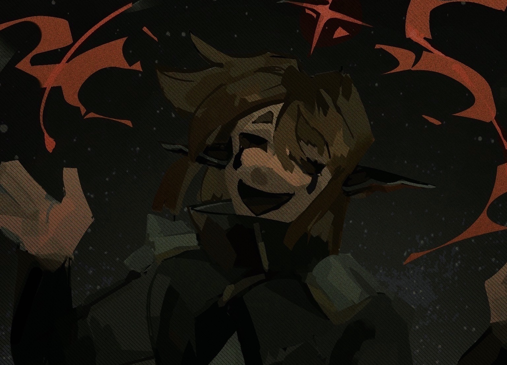

see you [...]
creation date: dec-feb 26 worked on it on and off thru the months x-x
character featured: archer
oh...... this drawing kind of pisses me off............. it felt nice drawing it but i don't like the end product all that much. more like, i felt some things didn't carry over from the original intent, specifically how the face looks. idk idk

urhg............
crop out the bottom half and it looks OK. the only part of the drawing i like.
